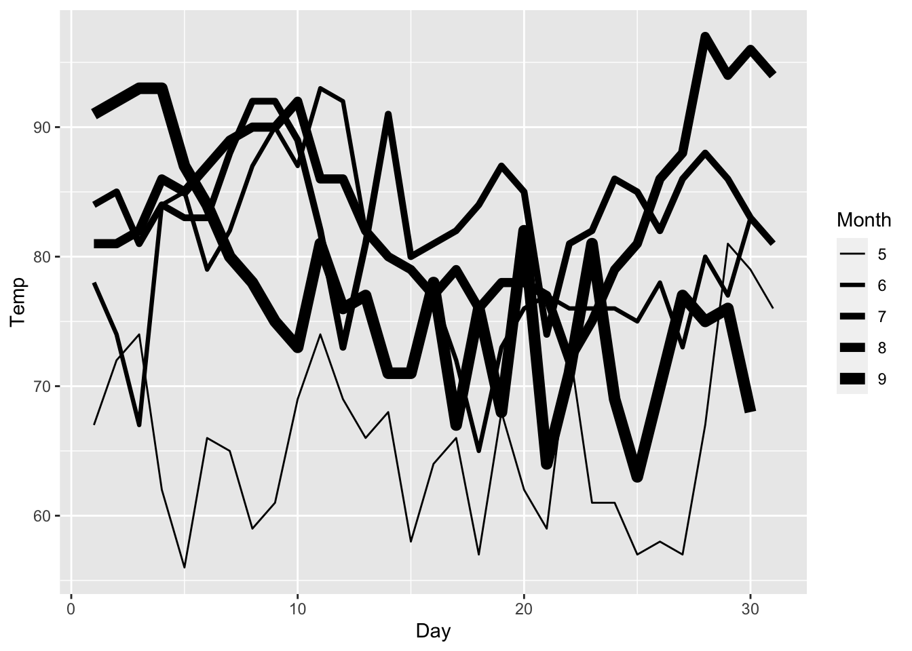

pak::pak("cran/ggplot2@3.4.0")linewidth
ggplot2 3.4.0
ggplot2
ggplot2 3.4.0 introduces a new linewidth aesthetic.
Install ggplot2 3.4.0 with:
linewidth
linewidth will take over sizing of the width of lines - something that was handled previously by size.
library(ggplot2, lib.loc = new_lib)
ggplot(airquality) +
geom_line(aes(Day, Temp, size = Month, group = Month)) +
scale_size(range = c(0.5, 3))
library(ggplot2)
ggplot(airquality) +
geom_line(aes(Day, Temp, linewidth = Month, group = Month)) +
scale_linewidth(range = c(0.5, 3))
You will get a deprecation message if you try to use size when you should be using linewidth.
ggplot(airquality) +
geom_line(aes(Day, Temp, size = Month, group = Month)) +
scale_size(range = c(0.5, 3))Warning: Using `size` aesthetic for lines was deprecated in ggplot2 3.4.0.
ℹ Please use `linewidth` instead.When size is a valid aesthetic like geom_sf() or geom_pointrange(), you will not get a deprecation warning.
ggplot(airquality) +
geom_pointrange(aes(x = factor(Month), y = Temp), stat = "summary", size = 2)No summary function supplied, defaulting to `mean_se()`On the point of geom_sf(), the default line width is now 0.2 instead of 0.5:
library(sf)
library(patchwork)
tn <- leaidr::lea_get("tn")OGR data source with driver: ESRI Shapefile
Source: "/private/var/folders/pj/nmg9b8_93dq4kwt8nt2d4cj40000gn/T/RtmphQMPaE/47", layer: "47"
with 158 features
It has 18 fieldsp1 <- tn %>%
sf::st_as_sf() %>%
ggplot() +
geom_sf(linewidth = 0.5) +
ggtitle("Old default")
p2 <- tn %>%
sf::st_as_sf() %>%
ggplot() +
geom_sf(linewidth = 0.2) +
ggtitle("New default")
p1/p2
The switch to linewidth goes beyond aesthetics and targets everything that used size to target line width.